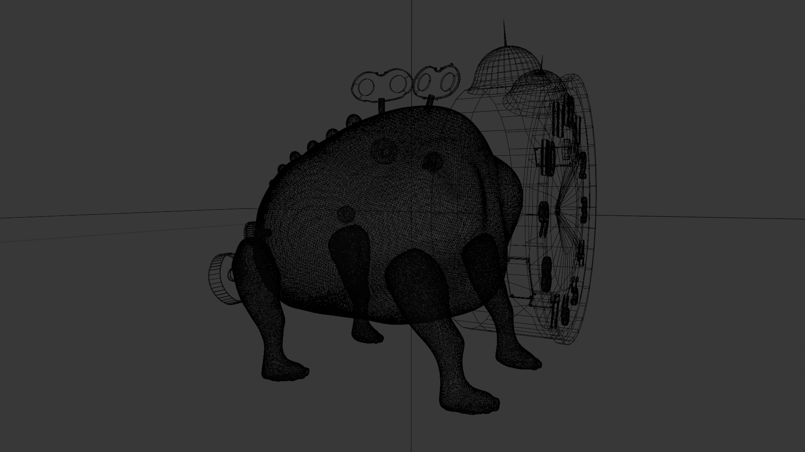
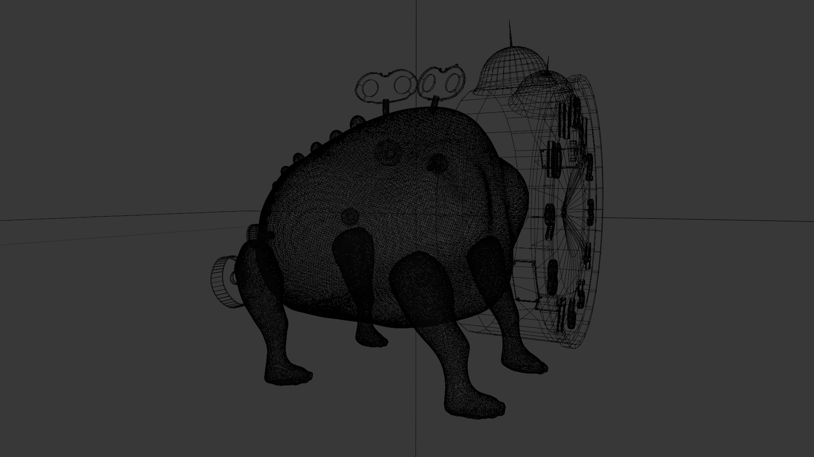

AI-gestützte Empfehlungsplattform
Technologie & Strategie
Machine Learning
Backend

Dieses Projekt entstand ursprünglich im Informatikunterricht und wurde von mir
zu einer einsatzfähigen Plattform weiterentwickelt. Ziel war es,
auf Basis von Nutzungsdaten Empfehlungen zu generieren und diese
strukturiert über eine Weboberfläche zugänglich zu machen.
Ich habe unter anderem:
- einen modularen Empfehlungsalgorithmus entworfen
- Datenaufbereitung & Normalisierung umgesetzt
- eine API-Schnittstelle erstellt
- eine Frontend-Übersicht für Benutzer entwickelt
Prozessautomatisierung im Unternehmen
Business Prozesse
Workflow Automation
Digitalisierung

In diesem Projekt habe ich manuelle und redundante Arbeitsschritte
in einem Unternehmensprozess analysiert und automatisiert.
Fokusbereiche:
- digitale Workflows statt manueller Abläufe
- automatische Dokumentenerstellung
- Fehlerreduktion & Effizienzsteigerung
Game- & Experience-Design
Creative Tech
Roblox Development
UX & Level-Design

Ein größeres, laufendes Game-Development-Projekt, bei dem ich
Spielfluss, Level-Struktur und Spielerlebnis gezielt gestalte.
Schwerpunkte:
- interaktive Umgebungen & Atmosphäre
- Player-Movement-Mechaniken
- Balancing & User Experience
3D-Modellierung – „Zeitmonster“
Creative Tech
Blender
PBR Texturing
 

Ein eigenständig erstelltes 3D-Charaktermodell, das ich in Blender
modelliert, texturiert und für den Einsatz in Game Engines aufbereitet habe.
- PBR-Materialien & Texture Baking
- Retopology & UV-Unwrapping
- Export-Workflow für verschiedene Umgebungen
Monetarisierung & Marketing
Monetarisierung & Marketing
Wirtschaft
User Analytics


Aufbau eines Monetarisierungs- und Marketing-Konzeptes
für viele verschiedene Projekte.
- Aufbau eines Brands mit selbstdesignten Symbolen
- Platzierung der Produkte auf den Markt
- Auswertung der Interaktionen und Anpassung des Produkts